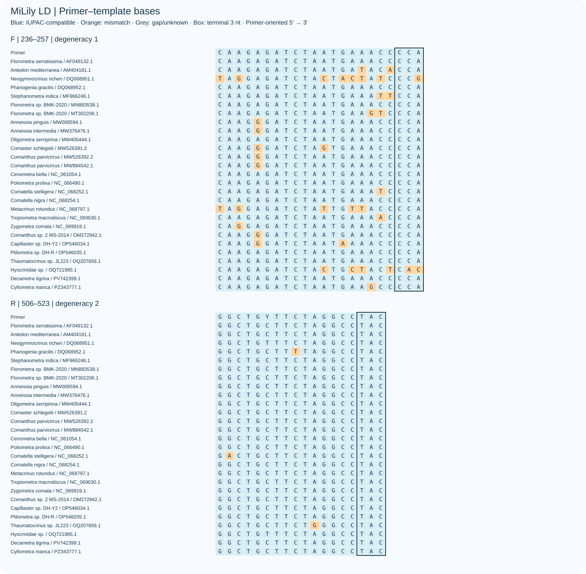

中文README · English README · 完整筛选与类群增减

主指标：每目内检出标签比例，再对四目等权。27条参考、25个标签，三个有柄目各仅一条参考。
| Scheme | Order coverage | Order exact | WC3 / GT2 |
|---|---|---|---|
| XS | 100.00% | 98.86% | 4196 / 3889 |
| SD | 71.59% | 43.18% | 4 / 7 |
| S | 19.32% | 7.95% | 0 / 0 |
| SA+SB | 19.32% | 13.64% | 0 / 0 |
| MD | 100.00% | 50.00% | 26 / 23 |
| M | 48.86% | 0.00% | 4 / 1 |
| MA+MB | 48.86% | 5.68% | 4 / 0 |
| LD | 50.00% | 14.77% | 0 / 0 |
| L | 25.00% | 9.09% | 0 / 0 |
| LA+LB | 25.00% | 13.64% | 0 / 0 |
| XLD | 75.00% | 68.18% | 8 / 3 |
| XL | 67.05% | 2.27% | 0 / 0 |
| XLA+XLB | 69.32% | 5.68% | 0 / 0 |


